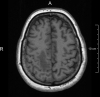
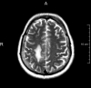
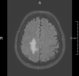
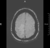
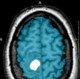
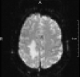
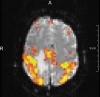
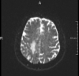

| | ||||||
| |
 |
|||||
July 31, 2010, (passed) |
September 10, 2010 |
|
Web and data hosting for VisContest is provided by courtesy of SDSC and TeraGrid |
| We require that any publications (not the contest entries) using any of these patient datasets include the following acknowledgment: The dataset is courtesy of Prof. B. Terwey, Klinikum Mitte, Bremen, Germany. Data can be downloaded from following two locations Case 1 (enclosed pdf document updated on 9th Feb. 2010) |
|---|
|
MRI data of a patient with an intra-cerebral metastasis has been acquired on a Siemens 3T Verio MR scanner in Bremen, Germany. download complete dataset
The zip file contains a pdf file which provides information about the image coordinate system. For each image file we provide an additional header file, which contains meta information like the data type, resolution, voxel-to-world matrix, endianess and gradients (for DTI).as raw image format md5: 66052962d8b001c9d2626b2c4520b07e |
download complete dataset
as MeVisLab image format md5: 8a1fbac5145726bcdb667ce045a56a23  To open the datasets saved as MeVisLab format, download MeVisLab, a development environment for medical image processing and visualization.
To open the datasets saved as MeVisLab format, download MeVisLab, a development environment for medical image processing and visualization.The format contains all information about the voxel datatype, image resolution, DICOM tags etc., so you don't have to bother importing the data correctly. |
| We require that any publications (not the contest entries) using any of these patient datasets include the following acknowledgment: The dataset is courtesy of Prof. B. Terwey, Klinikum Mitte, Bremen, Germany. Case 2 (enclosed pdf document updated on 24th Mar. 2010) |
|
MRI and CT data of a patient with a glioma has been acquired on a Siemens 3T Verio MR scanner in Bremen, Germany.
The data set is much more challenging than the first one with respect to the neurosurgical situation.
While the metastasis of case 1 is relatively simple to remove, this tumor is a hard task for all neurosurgical domain experts and
a high-quality visualization during the preoperative suergery planning is essential for a good result.
While case 1 is mandatory, the new case 2 may be optionally used to emphasize your work! download complete dataset
The zip file contains a pdf file which provides information about the image coordinate system. For each image file we provide an additional header file, which contains meta information like the data type, resolution, voxel-to-world matrix, endianess and gradients (for DTI).as raw image format md5: cf8c8af2d4fa290d9b4f98cfdf328c6c |
download complete dataset
as MeVisLab image format md5: 39c4854d12c96069d8fed7e5e2d945c5
To open the datasets saved as MeVisLab format, download MeVisLab, a development environment for medical image processing and visualization.The format contains all information about the voxel datatype, image resolution, DICOM tags etc., so you don't have to bother importing the data correctly. |
| Available Sequences: |
- Anatomical Images
T1-, T2- and FLAIR images are capable of displaying the anatomic properties of the brain in great detail. The typical resolution for T1 images is 1mm3 per voxel, allowing a relatively good delineation of anatomical structures on a macroscopic scale.

T1
(MPRAGE, 1 mm3)
T1
(MPRAGE, 1 mm3)

T1 + Contrast agent
(MPRAGE, 1 mm3)

T2
0.36 mm2 * 6.0 mm
T2
0.36 mm2 * 6.0 mm

FLAIR
0.45 mm2 * 6.0 mm
FLAIR
0.45 mm2 * 6.0 mm

SWI
0.9 mm2 * 2.5 mm
SWI
0.9 mm2 * 2.5 mm

Brainmask - Tumormask
Brainmask - Tumormask
- Functional (fMRI) / Structural Images (DTI)
fMRI is a technique capable of identifying areas on the cortex associated with a given task, such as finger-movement, verb-generation or language processing. It plays a major role at identifying vital functional areas on a patient specific base.
Diffusion Tensor Imaging is a technique that allows reconstruction of the pathway of major fiber-bundles in the brain. It is key to identifying and understanding the connectivity of functional areas.

fMRI: Fingertapping
3.0 mm2 * 3.3 mm 100 timepoints
Design: 10 rest / 10 active
fMRI: Fingertapping
3.0 mm2 * 3.3 mm 100 timepoints
Design: 10 rest / 10 active

fMRI - statistical parametric map
fMRI - statistical parametric map

DTI
1.8 mm2 * 2.0 mm
30 Gradients
2 NEX
DTI
1.8 mm2 * 2.0 mm
30 Gradients
2 NEX
All datasets have been linearly co-registered to the 3D-T1 reference dataset. The 3D T1 datasets have been corrected for MR intensity inhomogeneities using a standard algorithm (N3, nonparametric nonuniformity normalization). The fMRI data has been motion-corrected and analyzed using a general linear model.
| Additional information |
|---|
|
Note: All information provided here can also be found in a separate pdf file contained in the zip files! We've put together some resources to get you started in case you are not familiar with MRI and the type of images provided here. There is a wealth of information available on these techniques. A good place to start reading might be Wikipedia, the following entries in particular: http://en.wikipedia.org/wiki/Magnetic_resonance_imaging http://en.wikipedia.org/wiki/Diffusion_MRI http://en.wikipedia.org/wiki/Fmri Also, the following books might be of interest: S. Mori, Introduction to Diffusion tensor Imaging, Elsevier, 2007 S. Mori et al., "MRI Atlas of Human White Matter", Elsevier, 2005 H. Johansen-Berg, T. E.J. Behrens, "Diffusion MRI", Academic Press, 2009 S. A. Huettel et al., Functional Magnetic Resonance Imaging, Sinauer Associates, 2004 If you need tools to work with the fMRI or DTI datasets, have a look at the following free tools (there are a lot more though...): 3D-Slicer Camino FSL Also, we can provide add-on packages for MeVisLab that allow analysis of fMRI and DTI datasets. Contact us, if you're interested in trying them out. |